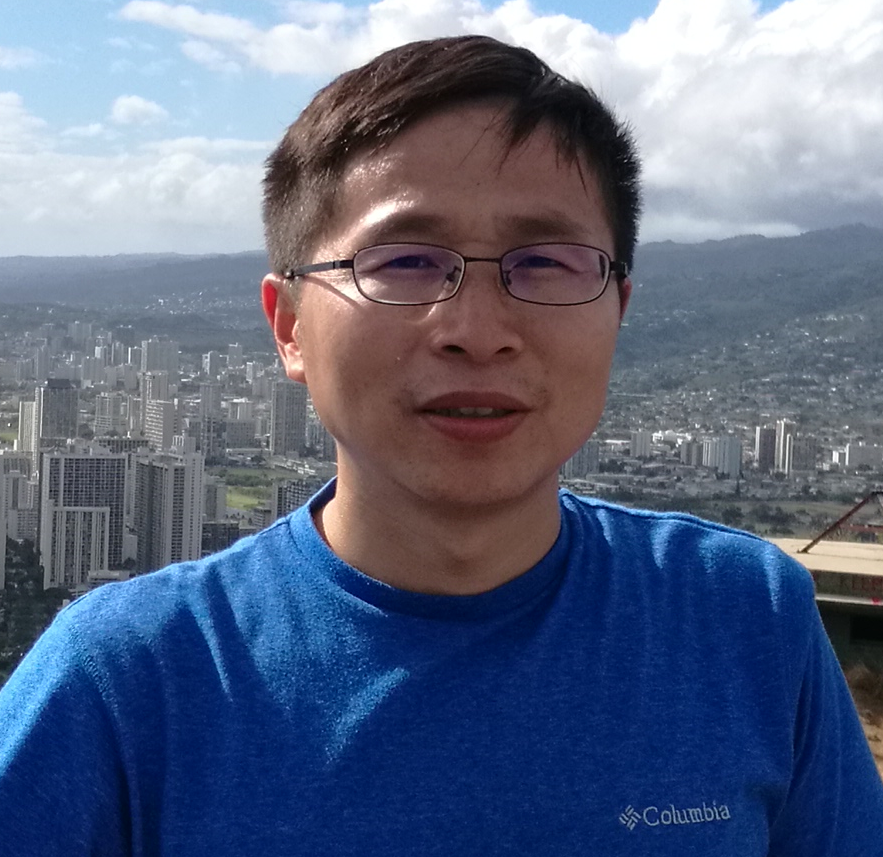

个人简介
王井东博士，加拿大工程院外籍院士、国际电气电子工程师学会会士、国际模式识别学会会士、国际计算机协会杰出会员。 加入百度之前，2007年至2021年在微软亚洲研究院工作，历任副研究员、研究员、高级研究员、资深首席研究员。
目前研究领域包括 世界模型、多模态理解和生成 以及 扩散模型 等。 过去的研究领域为计算机视觉、深度学习和多媒体搜索。代表工作包括：第一个统一的视觉识别网络 – 高分辨率网络 HRNet， 基于 transformer query 的图像语义分割网络 OCRNet， 第一个有监督的区域特征融合的显著性检测算法 DRFI，以及 第一个基于近邻图的可实用的千亿量级的向量搜索算法 NGS 与 SPTAG —— 这是首个在百亿数据规模上部署的、面向真实大规模相似搜索的图索引向量搜索系统。
近期在生成式 AI 和自监督表示学习方面持续贡献，包括 SRA 和 MixFlow 扩散模型训练技术， Hallo 系列人像视频生成，以及 CAE 自监督视觉表示学习。SRA 的核心思想被 Self‑Flow 扩展，成为 FLUX 3 生成模型的关键训练技术。
王井东博士担任 ICCV 2025 程序委员会主席，担任或曾担任 IEEE TPAMI、IJCV、ACM TOMM、IEEE TMM 和 IEEE TCSVT 的编委， 并担任或曾担任视觉、多媒体和人工智能等方向顶会的（资深）领域主席， 包括 CVPR、ICCV、ECCV、NeurIPS、ICML、ICLR、ACM MM、IJCAI 和 AAAI 等。